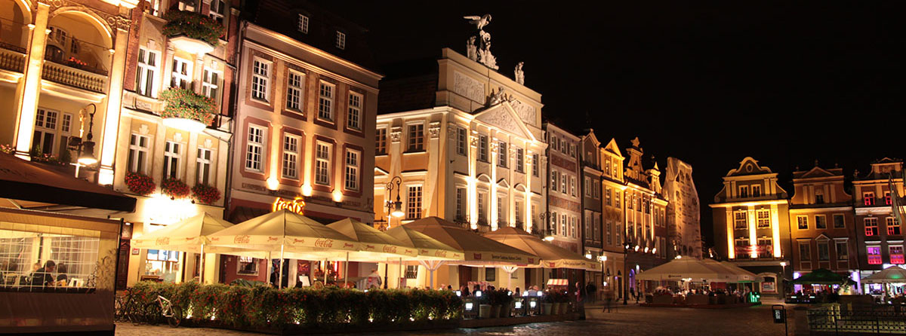
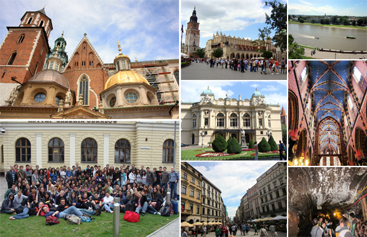
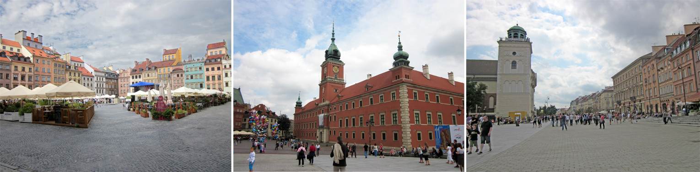
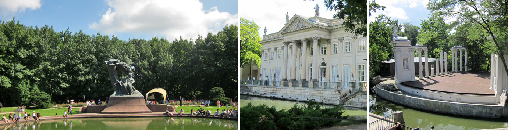
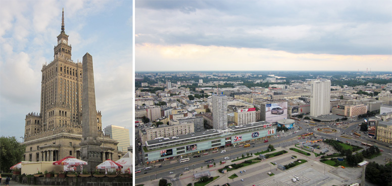
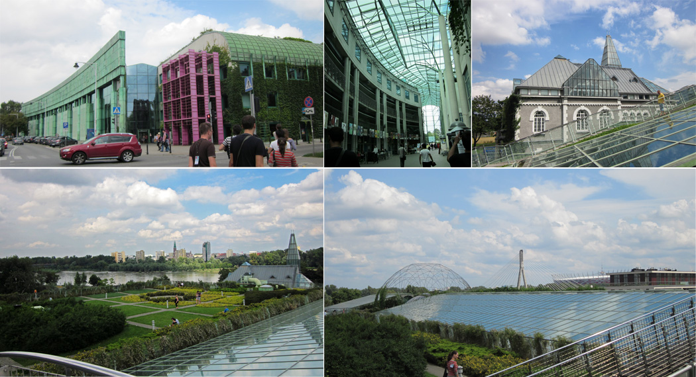
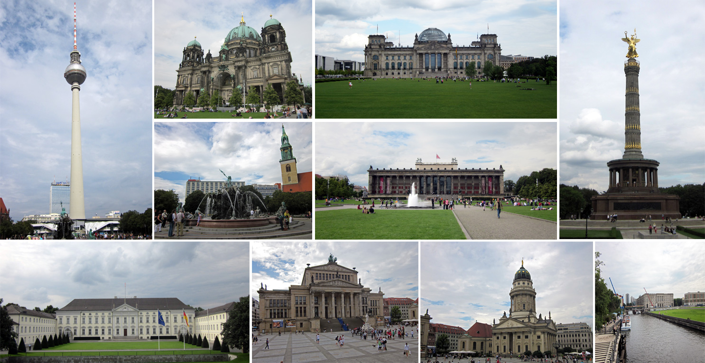

Polonya günlükleri: Poznan, Gdansk, Krakow ve Varşova
September 13, 2011Poznan'da ilk hafta

Polonya’daki ilk haftamın ardından blog yazmak için sonunda bir fırsat buldum. :) Öncelikle yolculuğumdan bahsetmek istiyorum. İstanbul’dan Poznan’a doğrudan uçuş yok, aktarmalı uçuşlar da oldukça pahalı. Google Maps üzerinden de görebileceğimiz gibi Berlin Poznan’a oldukça yakın. İstanbul Sabiha Gökçen’den Berlin Schönefeld havaalanına uçup sonra Berlin – Varşova ekspresi ile Poznan’a geçmek en mantıklı çözüm oldu diyebilirim. Tren biletleri bahn.de adresinden önceden yaklaşık 29€’ya alınabiliyor. Berlin Schönefeld tren istasyonundan Ostbahnhof istasyonuna gitmem ve oradan Varşova ekspresi ile Poznan’a ulaşmam toplamda 3 saat sürmedi.
Poznan’daki ilk günümden itibaren hareketli bir staj dönemine adımımı attım. Burada bütün diğer yabancı stajyerler ile birlikte Poznan Teknoloji Üniversitesinin yurtlarında kalıyoruz. Polonya’da staj değişim kulübü (IAESTE) oldukça aktif. İlk günden itibaren yurda kayıt, aylık toplu taşım bileti alımı, para değişimi gibi konularda oldukça yardımcı oldular. Her gün bir etkinlik oluyor genelde, şimdiye kadar hiçbir günüm boş geçmedi.
Çalışmaya başlamadan önce açıkçası bu stajdan teknik bir beklentim yoktu, ancak teknik açıdan da önceki stajlarımdan daha iyi olduğunu söyleyebilirim. Poznan Supercomputing and Networking Center isimli bir araştırma kurumunda görüntü tabanlı izleme sistemleri çalışıyorum. İlk iki haftada tamamlanmak üzere kamera tabanlı bir araç park yeri izleme sistemi geliştirmemi istediler, ilk haftadan bitirdim projeyi, önümüzdeki haftalardan itibaren daha büyük projelerin içinde yer alacağım. İş arkadaşlarım oldukça arkadaş canlısı, yetenekli ve ileri seviyede İngilizce konuşabilen insanlar, teknik problemleri çözmemde oldukça yardımcı oldular. Staja kabul sürecinden de biraz bahsedecek olursam temelde iki aşamada gerçekleşti. Öncelikle IAESTE YTÜ tarafından İngilizce sınavı, not ortalaması ve etkinlik puanı gibi faktörler göz önünde bulundurularak aday gösterildim ve CV, niyet mektubu, transkript, İngilizce belgesi v.s. dökümanlardan oluşan bir pdf dosyasını IAESTE Poznan’a gönderdim, sonrasında şirket ile skype üzerinden teknik mülakat oldu ve kabul edildim. İşyerim oldukça güzel bir yerde, iç açıcı bir manzarası var.
Sanırım kuzeyde olduğumuz için burada günler epey uzun, gece karanlığı yaklaşık 5 saat sürüyor. İş çıkışında gezmek için epey vaktim oluyor. Poznan’daki ikinci günümde Malta gölünün kıyısında Poznan Filharmonik Semfoni Orkestrasının konseri vardı, sonraki gün Malta Festivali’nde Manu Chao konseri... Şu sıralar şehir baya hareketli diyebilirim. :)
Yurttaki arkadaşlar da oldukça arkadaş canlısı insanlar, Brezilya, Hırvatistan, İspanya, Hindistan, Ukrayna gibi çeşitli ülkelerden gelen stajyer öğrenciler ve Poznan Teknoloji Üniversitesi’nde okuyan Polonyalı öğrenciler var. Çoğunun İngilizcesi oldukça iyi, benim için oldukça güzel bir pratik fırsatı oldu. Gündüzleri fırsat buldukça şehir turu, kampüste barbekü ve bahçede futbol gibi mini aktiviteler gerçekleştiriyoruz.
Poznan hakkında genel izlenimlerimi paylaşacak olursam sevimli bir şehir diyebilirim. Oldukça yeşil bir kent ve güzel gölleri var. Fazla kalabalık değil, ferah, tramvayda oturacak yer bile bulabiliyorum. Şu sıralar hava da çok güzel, ne sıcak ne soğuk ortalama 24 derece diyebilirim. Fiyatlar İstanbul ile aşağı yukarı aynı tahminimce %20 civarı daha ucuz, ayrıca birçok yerde öğrencilere indirim uygulanıyor. Staj için verilen maaş barınma, yeme içme ve eğlence giderlerini karşılayacak seviyede.
Gdańsk
 Bu haftasonu Polonya’nın Baltık denizi kıyısındaki şehri Gdańsk’taydık. Gdansk taş döşeli sokakları, ortaçağ mimarisini yansıtan binaları, şehrin içinden geçen Motlawa nehri ve Baltık denizi ile oldukça güzel bir şehir. Motlawa gölünde kano ile neredeyse bütün şehri dolaştık. Sanırım 2 saatten fazla sürdü, bir an kaybolduk sanmıştım. :)
Bu haftasonu Polonya’nın Baltık denizi kıyısındaki şehri Gdańsk’taydık. Gdansk taş döşeli sokakları, ortaçağ mimarisini yansıtan binaları, şehrin içinden geçen Motlawa nehri ve Baltık denizi ile oldukça güzel bir şehir. Motlawa gölünde kano ile neredeyse bütün şehri dolaştık. Sanırım 2 saatten fazla sürdü, bir an kaybolduk sanmıştım. :)
Öğleden sonra şehir turu yaptık, şehir merkezinde dünyanın tuğladan yapılmış en büyük kilisesi olan Meryem Ana Katedrali’ne çıkarak şehir manzarası seyredilebiliyor.
Pazar gecesi trenle Poznan’a geri döndük. Polonya’da en popüler şehirlerarası ulaşım aracı trenler sanırsam. Pek konforlu oldukları söylenemez ancak oldukça ucuzlar. Biletlerde koltuk numarası yok, erken gelen oturuyor. Dönüşte boş bir kompartıman bulabildiğimiz için şanslı sayılırız.
Kraków
 7,5 Saatlik uzun bir tren yolculuğunun ardından Krakow'a ulaştık. Normalde trenlerde boş koltuk bulmak bile zorken boş kompartıman bulabilmemiz oldukça güzel oldu. :) Poznan'daki stajyer arkadaşlarla birlikte, dünyanın dört bir yanından gelen 150 civarı öğrecinin katılımı ile gerçekleşen 8. IAESTE Orta Avrupa Buluşmasının katılımcıları arasındaydık.
Krakow'da dolaşmaya başladığımız andan itibaren heryerde şehrin sembolü olan ejder figürleri dikkatimizi çekiyor. Meşhur Wawel Kalesinin önünde de 5 dakikada bir ağzından ateş püskürten bir ejder heykeli var. Gotik bir mimariye sahip Wawel Kalesi Krakow'da mutlaka görülmesi gereken mekanlardan biri. Polonya'nın şehirlerinde genellikle şehir meydanı diyebileceğimiz Rynek Główny adında eski market alanları var. Krakow'un eski şehir (Stare Miasto/Old Town) bölgesinde yer alan meydan oldukça ünlü ve görülmeye değer. St. Mary Kilisesi (Kościół Mariacki) ahşap oymaları ve gotik mimarisi ile bu meydandaki dikkat çeken yapılardan biri. Polonya'nın en uzun nehri olan Vistül Nehri (Wisła) de şehrin içinden geçiyor. Özellikle havanın açık olduğu zamanlar şehre ayrı bir güzellik katıyor.
Akşama doğru Krakow'a tren ile yaklaşık 45dk mesafede olan Bochnia'daki meşhur tuz madenine gittik. Asansörle 200-250 metre yerin altına indikten sonra yer altı treni ile meşhur yeraltı kilisesinin bulunduğu alana geldik. Madenin turizme açık olan bölümlerini gezdikten ve yeraltı sularında kano turuna katıldıktan sonra madendeki restoranda yemek yedik. Tuz madenini restoran, basketbol sahası, yer altı gece kulübü ve yatakhaneler ile adeta yer altı turizm kompleksine çevirmişler. Yatakhaneden kastettiğim artık kullanılmayan tarihi bir yatakhane değil. Evet, tuz madeninde yerin 250 metre altında uyuduk. Çılgınca görünse de pek konforlu bir gece olduğunu söyleyemem, sabah günyüzüne çıktığımızda rahat bir nefes aldım. :) Tuz madenini gezmek güzel bir fikirdi ama madende sabahlamak için aynı şeyi söyleyemeyeceğim. Madende 16 saat geçirildiğinde gezi eğlenceden çok eziyete dönüşebiliyor.
Ertesi gün Krakow'a geri döndük ve eski şehir (Stare Miasto w Krakowie) civarlarında bu sefer gruptan ayrı, Poznan'dan arkadaşlarla birlikte gezdik. Akşam Poznan'a dönüşte şansımıza yeni trenlerden biri denk geldi, hızlı tren değildi ama hızlı gidebilen bir trendi, göstergelere göre saatteki hızımız 90 - 160 km/s arasında değişiyordu. Gidiş-dönüş tren bileti yaklaşık 55 liraya maloldu. Ayrıca Krakow gezisi Polonya'daki en ucuz seyahatim oldu diyebilirim, çünkü IAESTE AGH Krakow'un yaptığı çekilişte geziye ücretsiz katılma hakkı kazandım, Krakow'a ulaşım dışında herşey ücretsizdi. :)
Varşova
Her ne kadar Varşova hakkındaki yorumlar pek iyi olmasa da, Polonya'ya gitmişken başkentini görmeden gelmek olmaz diye düşünüp haftasonu etkinliğine katılmak üzere trene atladım. Varşova'nın Krakow kadar beğenilmemesinin sebebi muhtemelen eski yapıların çoğunun orijinal olmaması. İkinci Dünya Savaşı'nda neredeyse tamamen yerle bir edilen eski yerleşim bölgesi (Stare Miasto/Old Town) eski resim ve fotoğraflardan faydalanılarak yeniden inşa edilmiş.

Yapılar taklit de olsa Old Town, Varşova'daki en görülmeye değer yerlerden biri. Şehirde genel olarak bir sanat kokusu var; ressamlar, müzisyenler... Sokaklarda klasik müzik icra eden müzisyenlere rastlamak mümkün. Özellikle Chopin oldukça seviliyor; Łazienki parkında Chopin'in heykelinin olduğu alanda şu sıralar her pazar konser veriliyor. Ayrıca Łazienki sarayı ve parkı Varşova'da görülmesi gereken mekanlar arasında diyebilirim.

Tarihi müzelere meraklıysanız Warsaw Rising Museum ziyaret edebileceğiniz mekanlardan biri. Call of Duty oyununu oynamışlığınız varsa silahlar ve kostümler oldukça tanıdık gelecektir. Müzede İkinci Dünya Savaşı'ndan kalma silah, kıyafet v.s. eşyaların yanısıra bir de Varşova'nın savaş sonrası halinin simülasyonunun gösterildiği 3 boyutlu sinema odası bulunuyor.
Varşova'da en çok dikkat çeken yapılardan biri de Polonya'nın en yüksek binası olan kültür ve bilim sarayı (Palace of Culture and Science/Pałac Kultury i Nauki). Binanın terasından Varşova manzarası seyredilebiliyor.

Varşova Üniversitesi'nin kütüphanesi de görülebilecek mekanlardan biri. Özellikle çatıdaki bahçe gerçekten görülmeye değer. Bahçenin Vistula nehri ve Świętokrzyski köprüsü ile güzel bir Varşova manzarası var.

Dönüş yolculuğu ve Berlin
Polonya macerasının ardından dönüş yolculuğumda tekrar Berlin'e uğradım. Berlin - Varşova ekspresi sayesinde 2 saat 45 dakikada Poznan Glowny istasyonundan Berlin Hauptbahnhof istasyonuna ulaştım. Berlinde ulaşım ağı oldukça iyi; S-Bahn, U-Bahn ve Regional Bahn gibi ulaşım alternatifleri var. Tren istasyonlarındaki dokunmatik kiosklardan tek seferlik veya günlük bilet alınabiliyor. Ayrıca kiosklardaki yol tarifi özelliği ile kaybolmak çok zor, gideceğiniz istasyonun adını yazdığınızda hangi perondan hangi trene binmeniz gerektiği, varsa nerelerde aktarma yapacağınız ve sefer süreleri ile ilgili bilgiler ekrana geliyor, ayrıca dil seçeneklerinde Türkçe de var. Bu arada Berlin'de çok fazla Türk ile karşılaştım, özellikle Kreuzberg civarında herşey Türkçe: Beko, Ziraat Bankası, İş Bankası, Türk Restoranları... Sadece Türkçe konuşarak bile bir çok yeri gezmek mümkün.

Berlin'de de üstü açık şehir turu otobüsleri ile Televizyon kulesi, Berlin Katedrali, Brandenburg Kapısı, Parlamento Binası ve Bellevue Sarayı gibi bir çok meşhur yapıyı görmek mümkün.
Polonya, Yurtdışı